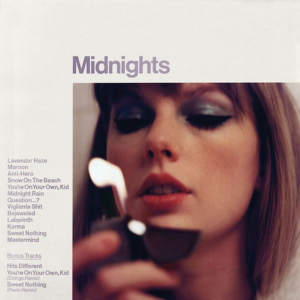

“Cause darling I’m a nightmare dressed like a daydream.”
Questo album ha impresso un momento nel tempo in modo così perfetto e mi ha trovato nel pieno della mia adolescenza, dove sentivo che davanti a me non c'era altro che libertà e futuro. Mi piace pensare che Taylor provasse la stessa cosa. Il suo passaggio alla musica pop è stato immediato, grazie al potente singolo Shake it Off, realizzato dalle leggende del pop Max Martin e Shellback, uno dei 3 singoli numero uno che hanno contribuito a garantire l'album. dell'anno ai Grammy. L’autenticità della produzione degli anni ’80 combinata con le magistrali melodie di una sola nota e il senso del ritmo di Taylor creano un suono che è familiare e fresco allo stesso tempo, come se fosse letteralmente al confine di un decennio e balzasse in quello successivo. Queste canzoni sono realizzate senza lasciare nulla sul pavimento della sala di montaggio, come se ogni dettaglio appartenesse esattamente al luogo in cui si trova. È impossibile scegliere una canzone preferita perché sono tutte così belle.
Ho ascoltato questo album ripetutamente, con disprezzo dei miei amici e della mia famiglia, con una luce che irradiava ogni volta dal mio petto. Come ho fatto a tenere tutta questa gioia per me?
Tracce migliori: Blank Space, Wildest Dreams, Clean
Per anni ho desiderato disperatamente che Taylor tornasse alle sue radici acustiche. Era inevitabile, ma non sarei stato preparato alla profondità e alla delicatezza che offre in quello che potrebbe essere considerato l'album più eclettico e accattivante finora. Le canzoni sono intrinsecamente scritte per parlare tra loro, e lei crea senza sforzo archi di personaggi e temi ricorrenti che delineano chi sta cantando di chi. Questi sono i suoi testi migliori finora per la loro sottigliezza e onestà e mi ha completamente lasciato senza parole per quanto siano carini e devastanti alcuni di questi hook (c'è anche una traccia diss di Scooter Braun chiamata Mad Donna). Questa cosa ha anche rotto le vendite di vinili a livello globale e due anni dopo sarebbe diventata un'ambasciatrice del Record Store Day e una figura fondamentale nell'aiutare l'evoluzione del vinile tra il pubblico più giovane.
L'intera fuga nella foresta, l'estetica centrale del folklore con hashtag, viene riportata alla luce e ripiantata dalla migliore produzione del trio Taylor sforzo fino ad oggi. Che si tratti delle scintillanti chitarre Mazzy Star di Antonoff sepolte in profondità in una sfera a specchio, o del battito costante di Dessner una calda onda sinusoidale che ti guida attraverso il lussureggiante paesaggio melodico della pace, questo album è un barattolo di marmellata di lucciole che chiede di essere aperto. Il magazzino della Rough Trade ha avuto la fortuna di poter operare in sicurezza per tutta l’estate del 2020 e ciò significa che il nostro team ha sviluppato un legame speciale mentre affrontavamo insieme quel periodo spaventoso ogni giorno. Abbiamo ascoltato folklore insieme attraverso un oratore in un caldo venerdì di nuove uscite con l'intenzione di prenderci una birra dopo il lavoro.
Tracce migliori: august, mirrorball, Seven
Questa è sicuramente la mia versione più hot e sono sicura che molti dei suoi fan non sarebbero d'accordo, ma penso che questo album sia succoso, felice e sano nonostante sia un po' un Jackson Pollock in termini delle sue influenze. Questo album si permette di essere carino e sciocco senza fare storie e il risultato è una lettera d'amore appiccicosa e romantica all'amore stesso che è nostalgica e sognante in egual misura. Credo che lo schema di colori rosa e blu di questo album abbia influenzato la genesi di Midnights e Taylor si riferiranno in seguito a Lover come alla sua controparte diurna. Dopo l'intensità di Reputation e il modo in cui Taylor ha cercato di prendere il controllo della narrazione che circondava la sua vita nella stampa, mi è piaciuto tantissimo vederla riprendersi da quella situazione divertendosi di nuovo.
Il suo primo album libero dagli artigli contrattuali di Big Machine potrebbe fare da colonna sonora a un film di formazione gay e per me è stata una rivelazione. Un caro amico uno dei miei ha detto che "la musica pop è sinonimo di esperienza queer" e, a sua volta, Lover è diventato parte del mio. Anche se potrebbe essere visto come un'esca queer, sono stato felice che Taylor evidenziasse esplicitamente l'esperienza queer all'interno dei tagli più profondi del disco. Quell'anno quell'album raddoppiò la durata della mia estate e spesso mi sedevo nel parco al sole con i
di Lorde. Melodrama facevano la fila dietro.“How can a person know everything at 18, but nothing at 22?”
Ormai è impossibile parlare di questo album senza considerare la Taylor’s Version prima. È il secondo album re-registrato tra i suoi primi 5, che rimane per lo più fedele all'originale ma è raccontato dall'epica straordinaria che èAll Too Well. All Too Well dura 10 minuti e attualmente conta poco più di mezzo miliardo di stream su Spotify. È un numero folle per una canzone così lunga! Ha accompagnato l'uscita della sua versione con un video musicale con protagonista il più grande della TV Kate Bush fan, Sadie Sink, che Taylor fece nel suo debutto editoriale.
Ho comprato il CD della versione del 2012 che io e il mio migliore amico lanciavamo a tutto volume dai finestrini della macchina alle stupide ore, mentre giravamo per le zone commerciali della nostra città natale. Non dimenticherò mai di esserci fermati al Macca's una sera e di cantare a squarciagola l'ultimo ritornello di Treacherous con l'impiegato del drive-through Swiftie, che ci ha dato abbastanza pacchetti di ketchup da dipingere il mondo intero di rosso. Quando avrà pubblicato tutte le versioni di Taylor, il suo atto di punizione creativa diventerà una delle manifestazioni di vendetta artistica più potenti e toste di sempre.
Best tracks: Red, Treacherous, All Too Well
"I had the time of my life fighting dragons with you."
Forse il 50% del mio ragionamento per questa classifica è perché Speak Now ospita uno dei miei brani di Tay Tay preferiti di tutti i tempi - Medio. Non posso sottolineare a parole quanto magnifica mi faccia sentire questa canzone. Suona il banjo per la miseria! È un trionfo catartico che sembra simile all'esperienza delle donne nella musica e sono grata di essere riuscita a digerirlo da adolescente marcio, perché mi è rimasto impresso. Forse la sua prima canzone mirata intenzionalmente e ad alta voce ai suoi detrattori, Mean eleva la svolta emotiva presa dopo Fearless più springsteeniana di due anni prima.
Ha scritto ogni canzone da sola e ha anche coprodotto l'album, cosa che dicevo ai ragazzi fantastici a scuola che credevano che non fosse uscito un buon album da Abbey Road. Speak Now è stato il suo rallentamento e la riflessione sulla sua crescita, sia come persona che come artista, che è qualcosa che avrebbe continuato a sviluppare come strumento per scrivere canzoni che penso la consolidi nel mondo reale: la sua capacità di riflettere così seriamente.
“Living for the thrill of hitting you where it hurts / Give me back my girlhood, it was mine first.”
Ho realizzato alcuni TikTok prima dell'uscita dell'album per Rough Trade mentre Taylor stava facendo "Midnights Mayhem With Me". dove annunciava il nome di una canzone ogni 5-7 giorni. Non avevo mai assistito al lancio di un album così lungo ed emozionante prima e tutto, dalla copertina ispirata ad American Apparel ai suoi post su Instagram, stava mandando i fan in una frenesia investigativa. Nel quotidiano. Incluso me. Questo album è un posto davvero carino nel suo catalogo. È come un cenno nostalgico alla libertà e alla finitezza della notte. Ha davvero alcuni momenti inaspettatamente emozionanti. Saldamente radicato nel synthpop, offre un ritiro più morbido dalla scala dell'era del 1989 e le permette di essere infinitamente più giocoso con il suo stile di lirismo fonetico. Con il suo co-collaboratore principale Jack Antonoff al timone del suo suono, questo album riesce a combinare l'affinità di Antonoff per le ricche frequenze basse e i modulatori di synth con il modo di scrivere canzoni di Taylor per creare un universo sonoro che rimane in pista con sicurezza attraverso le sue 20 canzoni, metà delle quali riempirebbero la Top del cartellone pubblicitario. 10 per la prima volta in assoluto. Ciò che per me è veramente speciale in Midnights è il fatto che campiona spesso le sue canzoni, sia per ricontestualizzarne il significato sia per farti sentire come se stessi passeggiando per casa di notte chiedendoti dove stai andando successivo.
“So watch me strike a match on all my wasted time.”
Sheryl Crow, spostati. A soli 16 anni, Taylor ha trascorso 24 settimane al numero uno nelle classifiche nazionali con il suo debutto omonimo, diventando così la classifica più lunga degli anni 2000 e, stranamente, è solo invecchiando che comincio ad apprezzare sempre di più quest'epoca. Ispirata da Shania Twain e The Chicks, aveva una visione chiara che combinava il classico suono country e la strumentazione con idee pop/rock infinitamente orecchiabili. In un certo senso, aiuterebbe a spianare la strada alla rinascita del paese che stiamo vivendo oggi nella cultura pop. Anche allora, l’immenso talento di Taylor per il fraseggio vocale è evidente nel suo modo di scrivere canzoni, che sarebbe poi diventata una delle sue sensibilità più forti e la cosa che preferisco di lei. Nel 2006 ero un grande fan dei Fall Out Boy - Taylor in seguito disse che i testi di Patrick Stump ispirarono il suo terzo album Speak Now, che Trovo divertente.
Per anni ho desiderato disperatamente che Taylor tornasse alle sue radici acustiche. Era inevitabile, ma non sarei stato preparato alla profondità e alla delicatezza che offre in quello che potrebbe essere considerato l'album più eclettico e accattivante finora. Le canzoni sono intrinsecamente scritte per parlare tra loro, e lei crea senza sforzo archi di personaggi e temi ricorrenti che delineano chi sta cantando di chi. Questi sono i suoi testi migliori finora per la loro sottigliezza e onestà e mi ha completamente lasciato senza parole per quanto siano carini e devastanti alcuni di questi hook (c'è anche una traccia diss di Scooter Braun chiamata Mad Donna). Questa cosa ha anche rotto le vendite di vinili a livello globale e due anni dopo sarebbe diventata un'ambasciatrice del Record Store Day e una figura fondamentale nell'aiutare l'evoluzione del vinile tra il pubblico più giovane.
"Seppellisco le accette ma conservo le mappe di dove le metto."
Fortunatamente questo è l'album che ha messo fine alla sua era da capo-ragazza, definendo il suo ritiro dalle luci della ribalta dopo il sensazionalismo del suo ultimo album